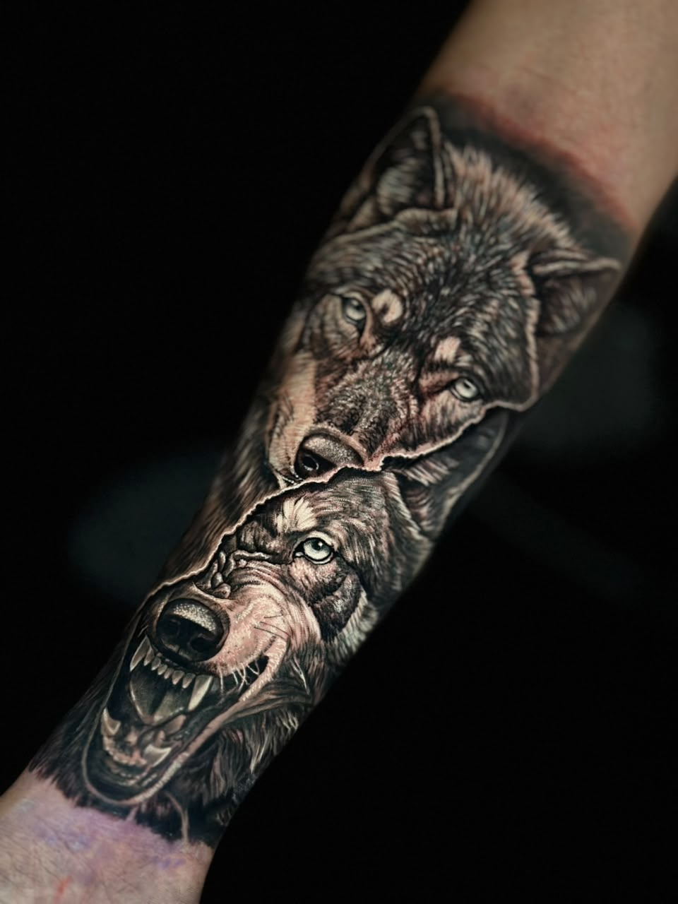
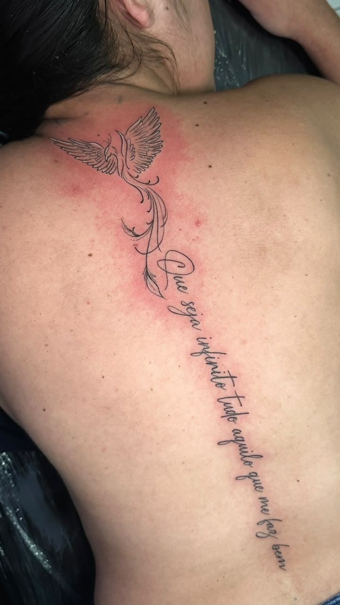
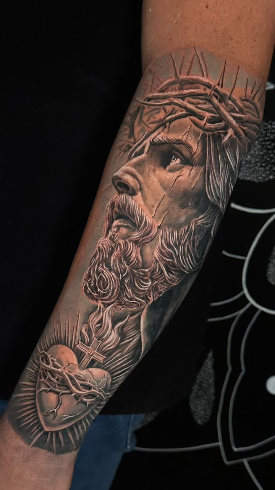

Tatuagens autorais, realismo, fine line e corbeturas
Fazer Agendamento
Pedro Lucas (Barba Branca Tattoo)
Tatuagens projetadas para surpreender no olhar e impressionar na cicatrização.
Especialista em Preto e Cinza, entregando contraste marcante, realismo em Portraits e restauração/cobertura de artes antigas.
Projeto exclusivo feito sob medida para você.
Ambiente seguro, confortável e biossegurança rigorosa.



Um pequeno guia para você aproveitar melhor o dia da sua tatuagem.
No dia da sua sessão, reserve o tempo necessário para a sua tatuagem. Além de ser um procedimento sério, é algo que vai marcar o resto da sua vida.
Leve fone de ouvido, um lanche e se sinta à vontade. É o seu momento de cuidar de você — relaxe e aproveite o processo.
Se alimente bem e beba bastante água antes de fazer a sessão. É necessário que você esteja bem de saúde para o procedimento.
Não consuma bebida alcoólica no dia anterior e no dia da sessão — isso afina o sangue e pode atrapalhar o resultado. Evite também anti-inflamatórios e aspirina sem orientação médica.
Vá com uma roupa que facilite o acesso ao local da tatuagem e que você não se importe de sujar um pouco. Isso deixa a sessão mais tranquila pra você e pra mim.
Siga direitinho as orientações de cicatrização que vou te passar: limpeza, pomada e proteção contra sol são essenciais pra sua tattoo ficar linda por muito tempo.
Conte sua ideia, envie referências e receba um orçamento personalizado.
Fazer Agendamento